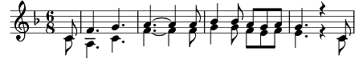

Plaisir d'amour
Fa majeur
Paroles: Martini
Musique: Martini
Arrangement: Cécile Göbel

Plaisir d'amour ne dure qu'un moment
Chagrin d'amour dure toute la vie.
Mon coeur entier ne battait plus que pour Armand
Et lui me quitte et prend une autre amie
Plaisir d'amour ne dure qu'un moment
Chagrin d'amour dure toute la vie.
Tant que cette eau coulera lentement
Vers le ruisseau qui borde la prairie,
Je t'aimerai, me répétait Sylvie.
L'eau coule encore : elle a changé pourtant.
Plaisir d'amour ne dure qu'un moment
Chagrin d'amour dure toute la vie.